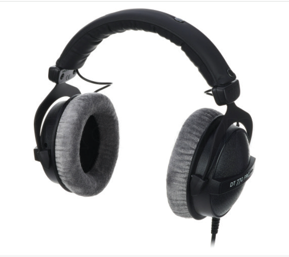
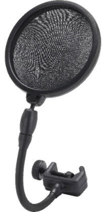
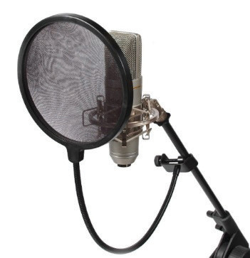

(g) Headphones: This is a pair of earphones worn over the head when listening to the music which is being produced. A singer can wear headphones to listen to the instrumental music when recording a song. A producer or studio technician can also use headphones to listen to the music they are producing. Good quality headphones help a producer or studio technician to hear how the final audio will sound. Figure 7.10 shows an example of headphones.

(h) Pop filter: A pop filter is an equipment designed to reduce the popping sounds before they reach the microphone. When singing into a microphone, your mouth can produce popping sounds when producing sounds such as “p” or “b”. In most cases, these sounds are unpleasant and unwanted in a recorded song. Figure 7.11 (a) shows a pop filter while Figure 7.11 (b) shows a pop filter fixed on a microphone stand.

